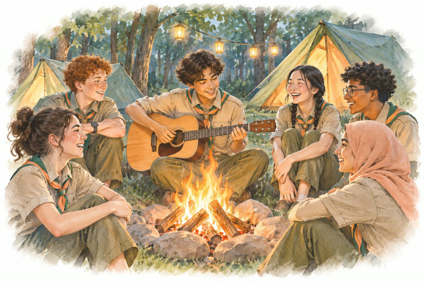

Listen to the text
Speed:

What do a British general, a tent and a green scarf have in common? Together they started the largest youth movement in the world. In the summer of 1907 Robert Baden-Powell took twenty boys to a small island off the south coast of England. For a week they lived in tents, cooked on a fire, learnt to read tracks and to tie knots. It was the first scout camp. A year later he published a book for boys, and scout groups began to appear all over Britain and then abroad. The idea was simple. Young people learn best by doing. They need adventure, friends and real responsibility. A scout promises to help other people and to do at least one good turn every day. The movement came to Ukraine very quickly. In 1911 and 1912 the first groups were founded in Lviv, and the organisation got the name Plast. The word comes from "plastun", a Cossack scout who could move silently and notice everything. Plast has had a difficult history: in some periods it was banned and had to work in secret or abroad. But it has never disappeared, and today thousands of young Ukrainians belong to it. What do members of Plast do? They go hiking in the mountains and learn to make a shelter and to give first aid. They try wood crafting, singing and orienteering. But it is not only about the forest. They also work as volunteers: they visit old people, clean parks and raise money for charity. Marta, 15, has been a member for six years. "People think that we just sit round a campfire," she says. "We do, and I love it. But the main thing is that Plast motivates you to grow. Last summer I had to lead a group of ten-year-olds on a three-day hike. I was terrified. Now I know that I can be responsible for other people." Sociologists say that such organisations are important for socialization. A teenager learns to work in a team, to solve conflicts and to keep a promise. The movement has evolved, of course. Today's scouts use GPS and make video blogs. But they still learn to light a fire with one match. Some skills never get old.
Tap any sentence to hear it again.
Сподобалось? На сайті ще більше матеріалів для вчителів!
Reader, презентації, ігри, діагностичні та контрольні роботи до підручників 1-11 класів.
Перейти на сайт materials.allaenglish.com